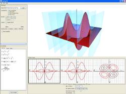

CalcSee3D is an interactive, visual learning tool for exploring multivariable calculus. With CalcSee3D, students can explore and manipulate a few of the concepts and objects that occur in multivariable calculus. For teachers, CalcSee3D offers another medium through which to demonstrate and enlighten students. Teachers can use it in the classroom to assist with lectures. They also can assign interactive exercises where students take textbook problems and solve them with CalcSee3D. Our learning philosophy is that students learn through interaction and experimentation. Because each student has his or her own questions about the material, having the ability to experiment with the material and receive feedback allows a student to answer his own questions.
CalcSee3D features the following:
- Basic Grapher -- CalcSee3D can graph functions of two variables (f(x,y) = z) about the origin. The grapher supports a few different display modes, including wireframe and transparent. While there are plenty of functions that display incorrectly because of their bizarre behavior, CalcSee3D should be suitable for most fundamental surfaces.
- Surface Traces Visualization -- This visualization lets users view all three traces of a surface in a 2D window, while displaying one of the traces in the 3D window.
- Tangent Plane Visualization -- Users can display the tangent plane of a surface at a given point on the surface. In addition, the user can choose to plot points that compare the value of the function to the value of the tan plane approximation.
- Limit Path Visualization -- This allows users to plot on a surface up to eight paths that go through the origin in order to see if the function's limit exists at zero.